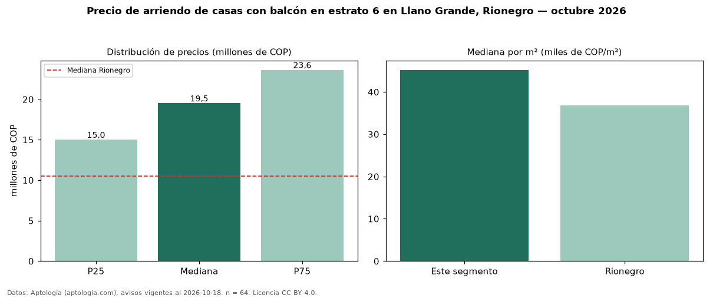

Precio de arriendo de casas con balcón en estrato 6 en Llano Grande, Rionegro — octubre 2026
En Llano Grande, Rionegro, la mediana de canon mensual de casas con balcón en estrato 6 es COP 19,50 millones, según 64 avisos vigentes. Prácticamente coincide con la mediana de las casas en estrato 6 en arriendo de Llano Grande (COP 19,50 millones, n = 111); este segmento reúne el 58 % de esos avisos. Por metro cuadrado, la mediana es COP 45.192/m² al mes (n = 61), 5 % por debajo de las casas en estrato 6 en arriendo de Llano Grande (COP 47.684/m²). El área mediana anunciada es 400 m². El segmento con más oferta es el de 3 o más habitaciones (63 avisos, mediana COP 19,50 millones). La mediana de todas las casas en arriendo de Rionegro es COP 10,50 millones (+86 % de diferencia). La mitad central de los avisos va de COP 15 millones a COP 23,62 millones (razón 1,6), una dispersión moderada. Datos: Aptología (aptologia.com), CC BY 4.0 — https://www.aptologia.com/arriendo/rionegro. Archivos: PDF, CSV con las cifras y gráfica PNG.

| Avisos únicos | 64 |
|---|---|
| Percentil 25 | COP 15.000.000 |
| Mediana | COP 19.500.000 |
| Percentil 75 | COP 23.625.000 |
| Mediana por m² | COP 45.192 |
Fuente: avisos vigentes de portales inmobiliarios recopilados por Aptología, deduplicados (mínimo 30 avisos únicos por celda). Precios pedidos, no cerrados. Fecha: 2026-10-18.